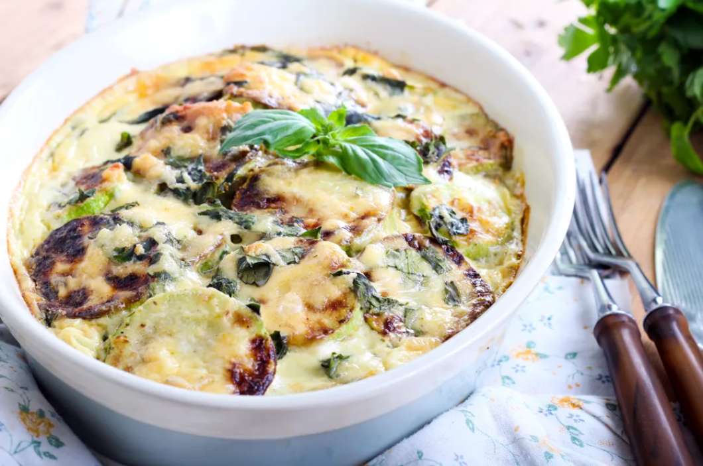

recettes de cuisine
1. Éplucher et cuire les courgettes à la vapeur.
2. Une fois qu'elles sont cuites les égoutter et les écraser avec un presse purée.
3. Ajouter 1 verre de lait et quelques cuillère de farine (qui absorbera l'eau des courgettes).
4. Placer le tout dans un plat à gratin et parsemer de gruyère râpé.
5. Cuire à four chaud pendant environ 15 min.
6. Servir chaud.
